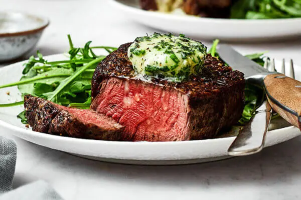

Steak Fa la la
Home

Sumptous, delightful, exquisite, critic says
Recently, our New Hill Times critic, Beneficio Aldente attended the newest restaurant in the Triangle. Known primarily for their steaks, they've unveiled their latest creation - Steak Fa la la. A 10 oz filet sitting on a bed of asparagus and topped with creamy bernaise sauce. It's a new must-not-miss dish!
- Grass-fed filet steak cut
- Organic asparagus
- 1 1/4 tablespoons of bernaise
- 1/4 cup of Worchestershire sauce
Preparation: Steps
- Season your steak using the steak marinade in existence. Let it set for 24 hours before prep.
- Grill for 10 total minutes at 450 degrees.
- Sauteé asaparagus in a white wine reduction.
- Put it all together, then whammo!